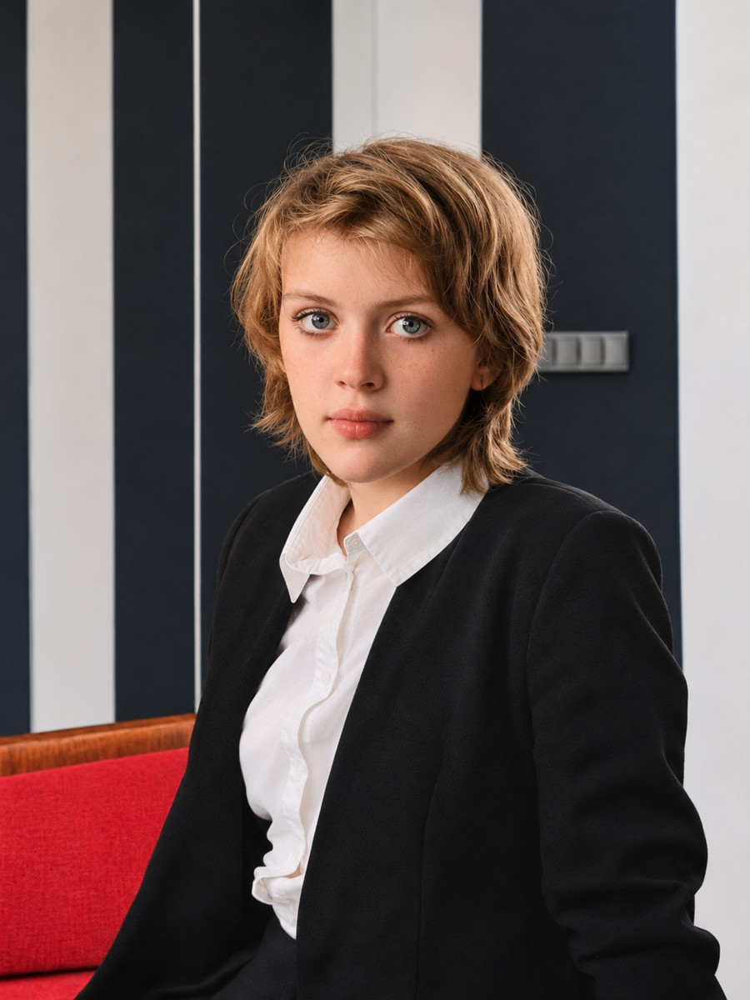

Музыка без границ
Раньше занималась вокалом, а сейчас слушаю много разной музыки — от классики до экспериментальной электроники.
В ПОСЛЕДНЕЕ ВРЕМЯ В НАУШНИКАХ
SadeCocteau TwinsЭдуард АртемьевГустав МалерArcaBjörkDorian ElectraEcco2k
ЛИЧНАЯ СТРАНИЦА / САНКТ-ПЕТЕРБУРГ
Ранняя Анастасия Романовна
Учусь создавать программы.
Люблю создавать что-то своими руками.
СПбГУ Программная инженерия 2 курс

Мне интересно, как устроен мир.
И что можно создать самой.
Я родилась в Ставрополе, а в два года переехала с семьёй в Санкт-Петербург. С детства отличалась самостоятельным характером: любила задавать вопросы, спорить и разбираться во всём сама.
С первого класса училась в математической школе. Среди любимых предметов были математика, физика и литература — интерес к точным наукам всегда соседствовал с интересом к гуманитарным.
После школы я рассматривала физику, но в итоге выбрала программную инженерию в СПбГУ, увидев в ней больше возможностей для будущей профессии. Сейчас учусь на втором курсе.
«В программировании меня завораживает возможность превратить идею в работающую вещь».
Раньше занималась вокалом, а сейчас слушаю много разной музыки — от классики до экспериментальной электроники.
В ПОСЛЕДНЕЕ ВРЕМЯ В НАУШНИКАХ
Люблю художественную литературу и научпоп. Особенно интересуюсь клинической психологией, психоанализом и подходами к терапии личностных расстройств.
С детства шила, вязала, рисовала и лепила. Особенно люблю рисование. В подростковом возрасте увлеклась макияжем — ещё одним способом работать с цветом и формой.
Восемь лет профессионально занималась плаванием. Сейчас регулярно хожу в зал и занимаюсь на тренажёрах.
Параллельный интерпретатор сетей взаимодействия на Zig
Bancai — интерпретатор сетей взаимодействия, вдохновлённый Inpla и написанный на Zig. Эта вычислительная модель позволяет выполнять независимые взаимодействия параллельно. В проекте реализованы однопоточное вычисление и базовая версия многопоточного выполнения.
Моё участие. Разработала специальный аллокатор. Сейчас в рамках курсовой работаю над механизмами ввода и вывода.
Виртуальное блочное устройство для Linux
Модуль ядра Linux создаёт виртуальные блочные устройства поверх существующих и передаёт им запросы чтения и записи. Параллельно собирает общую статистику по всем активным устройствам: количество запросов и средний размер операций.
Давай знакомиться.
Написать мне или посмотреть, над чем я работаю: